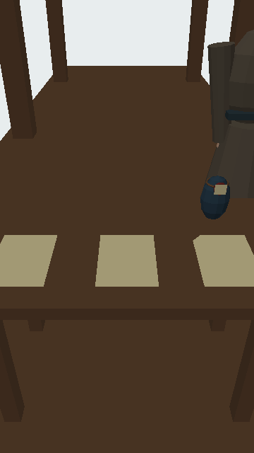
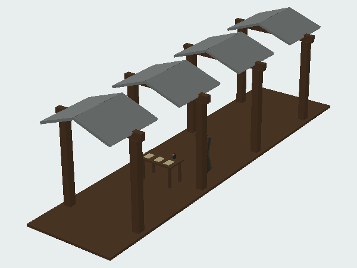
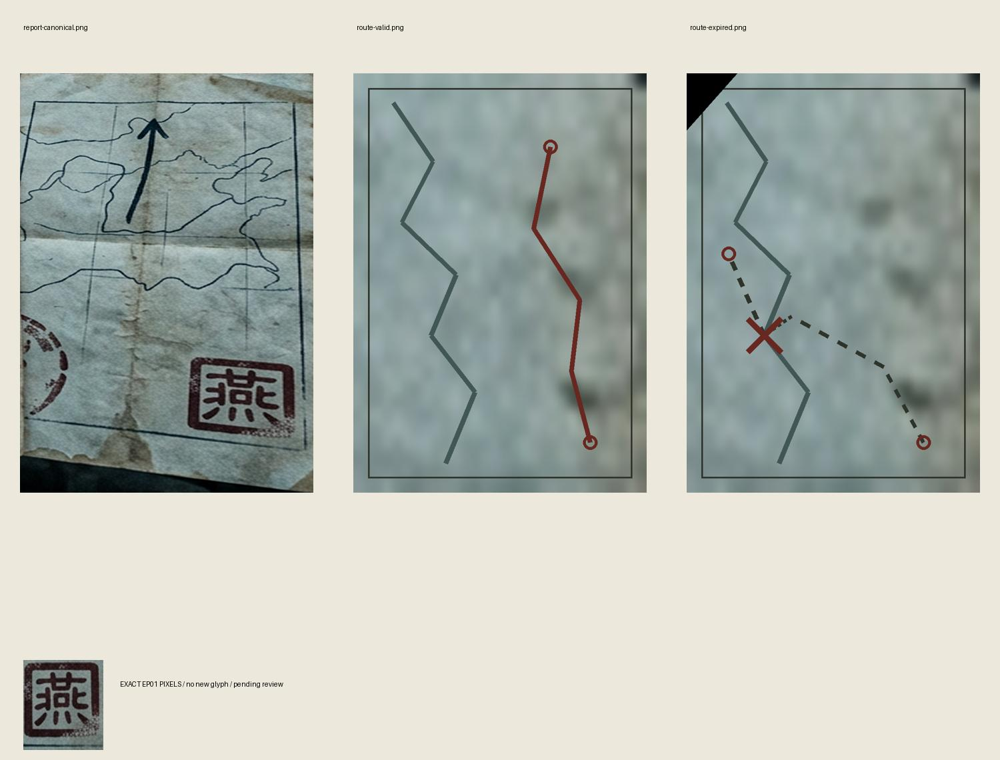
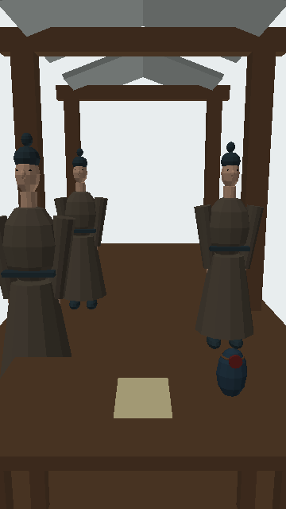
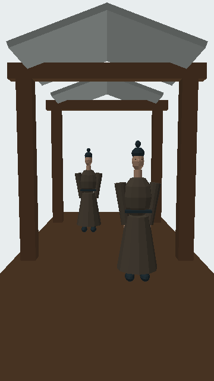
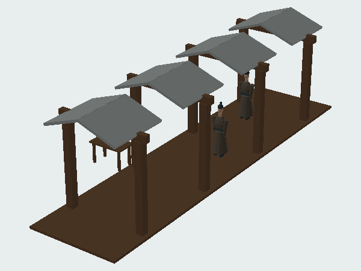
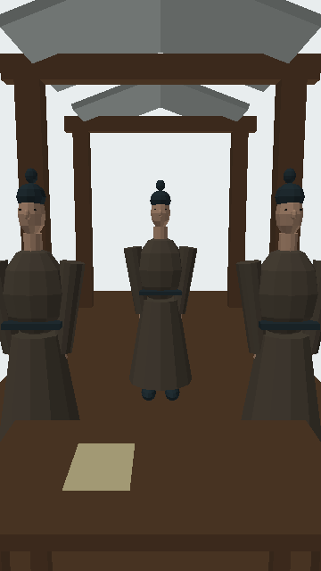

EP02-SET01 核验台：军报、有效图、旧图、封闭锦囊
打开 / 下载带贴图GLB · 实体与限制 · 相机

左：第一人称几何预览；右：制作诊断图，不作成片镜头。CPU预览没有纹理采样；GLB内含PNG与UV，实际贴图渲染待审核。人物为代理体块，面容未通过。
全部待审核；未提交付费生成，不能称为重绘完成。4套代表场景 / 11个长段落。没有伪造审批；旧scope通过不能放行新方案。
军报与“燕”印继承第一集实际像素；锦囊载密信，封泥只证封口，路线图单独表示通路。状纸不加军印。



左：第一人称几何预览；右：制作诊断图，不作成片镜头。CPU预览没有纹理采样；GLB内含PNG与UV，实际贴图渲染待审核。人物为代理体块，面容未通过。

左：第一人称几何预览；右：制作诊断图，不作成片镜头。CPU预览没有纹理采样；GLB内含PNG与UV，实际贴图渲染待审核。人物为代理体块，面容未通过。


左：第一人称几何预览；右：制作诊断图，不作成片镜头。CPU预览没有纹理采样；GLB内含PNG与UV，实际贴图渲染待审核。人物为代理体块，面容未通过。

左：第一人称几何预览；右：制作诊断图，不作成片镜头。CPU预览没有纹理采样；GLB内含PNG与UV，实际贴图渲染待审核。人物为代理体块，面容未通过。
| 镜头 | 时长 | 装配 | 画面动作 |
|---|---|---|---|
| EP02-S01 | 13.167s | EP02-SET01 | 0–3s：廊下停稳，桌面锦囊闭合。 / 3–10s：慢俯看绳结与封泥，不拆囊。 / 10–结束：抬眼等候，保留剪辑尾。 |
| EP02-S02 | 13.625s | EP02-SET01 | 0–3s：封泥原位、绳结受力。 / 3–10s：仅指向结绳，手不穿入囊内。 / 10–结束：手退出，锦囊保持原位。 |
| EP02-S03 | 15.083s | EP02-SET02 | 0–3s：信使A到面前，其他人不复制。 / 3–11s：听他口述六皇子的处境，不切异地皇宫。 / 11–结束：目光回到桌上。 |
| EP02-S04 | 12.083s | EP02-SET02 | 0–3s：三人一前两后，站位错开。 / 3–9s：只向A交有效图，B和C候命。 / 9–结束：先后转身，步行离开；原锦囊仍在台上。 |
| EP02-S05 | 16.042s | EP02-SET03 | 0–3s：从本人眼位追上返回者。 / 3–11s：人物接地停稳后报告口令差异；封泥只是封口证据。 / 11–结束：叫停众人，回向核验台。 |
| EP02-S06 | 16.083s | EP02-SET01 | 0–3s：先看左侧旧图缺角。 / 3–11s：指出红叉旧渡口；右侧有效图红线绕行。 / 11–结束：旧图留桌左收回区，不叠成军报。 |
| EP02-S07 | 18.083s | EP02-SET03 | 0–3s：追截结束停稳，人物站位固定。 / 3–12s：询问姓名、封口是否完整与路线，动作不并行。 / 12–结束：锦囊由原持有人交A；B和C只带口信，不能复制锦囊。 |
| EP02-S08 | 14.083s | EP02-SET03 | 0–3s：本人视线沿廊前行，脚步与位移对应。 / 3–10s：信使先后送回回执，灯由人点亮。 / 10–结束：回执放台面，不变成地图或封泥。 |
| EP02-S09 | 13.083s | EP02-SET04 | 0–3s：最后信使面前停稳。 / 3–11s：口述册立消息，回执留印，原锦囊不返回复制。 / 11–结束：收回执，情绪放松。 |
| EP02-S10 | 12.083s | EP02-SET03 | 0–3s：两府来客先后步入，互不克隆。 / 3–9s：在谢听云面前求问麒麟才子，不切异地。 / 9–结束：看向雨幕，留呼吸。 |
| EP02-S11 | 14.083s | EP02-SET04 | 0–3s：三名信使和书吏依次在面前站定。 / 3–6s：收住当夜故事，不出现制片术语。 / 6–结束：沿用同一广告原录音，音乐压低，画面保留。 |
三信使与书吏各有独立ID，但旧库脸部体块相同，不能证明人脸去重；尚无独立肖像锚点。手部接触、交接、全帧运镜仍待建模审查。本包是代表静态装配，不是完整动态验收。